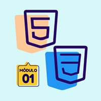
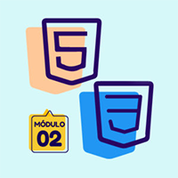
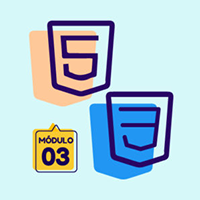

Tecnólogo em Análise de Desenvolvimento de Sistemas
Durante o período de estudos irei aprender a parte Lógica e Algoritmos, e conectando esses conceitos em uma sólida base de Banco de Dados, Persistência de Dados e Infraestrutura de Redes.
Estudando também as áreas de desenvolvimento web, tanto front-end como back-end, desenvolimento mobile, Devops e muito mais.
Técnico em Administração
Formado pelo Colégio Estadual Ulysses Guimarães - Foz do Iguaçu - PR, tive a oportunidade de desenvolver habilidades técnicas afim de otimizar processos gerencias, melhorar a operação de uma empresa, aperfeiçoar o sistema logístico, boas práticas no fluxo financeiro da empresa, e desenvolver pessoas com análise em comportamento organizacional.



Desenvolvimento de Sites - Curso em Video
Através da plataforma do curso em video, tive a oportunidade de iniciar meus estudos como desenvolvedor web, com estes três cursos ministrado pelo professor Guanabara, onde tive o prazer de aprender e exercitar as aulas com bastante aproveitamento.
Através destes cursos eu consegui montar esse ambiente em que você está lendo este material, espero que esteja gostando!